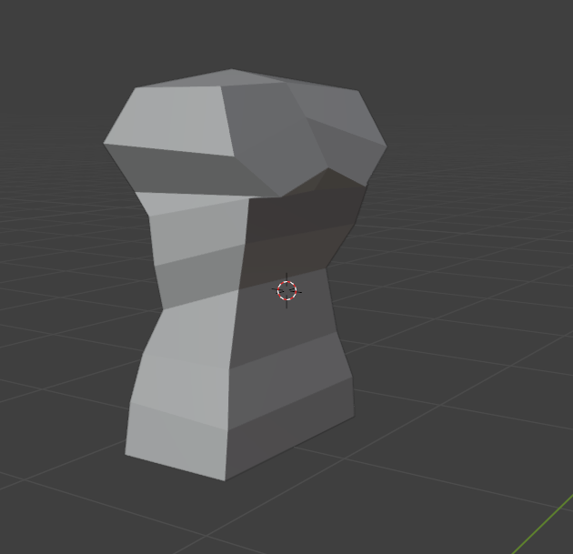
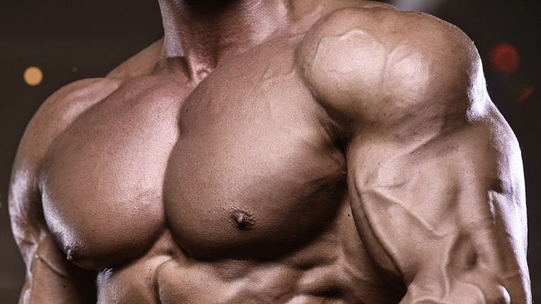
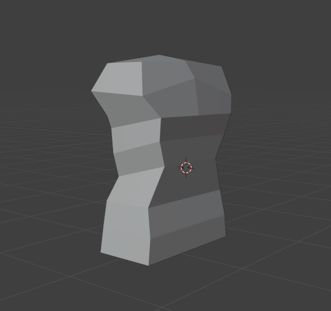
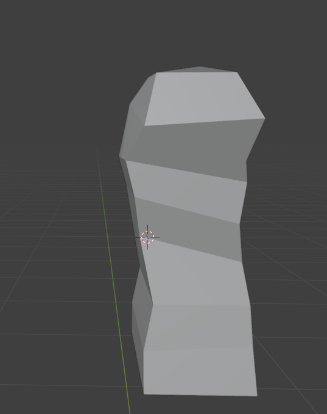
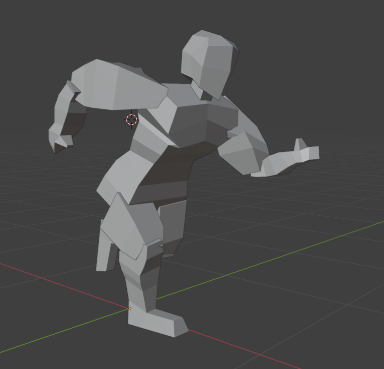
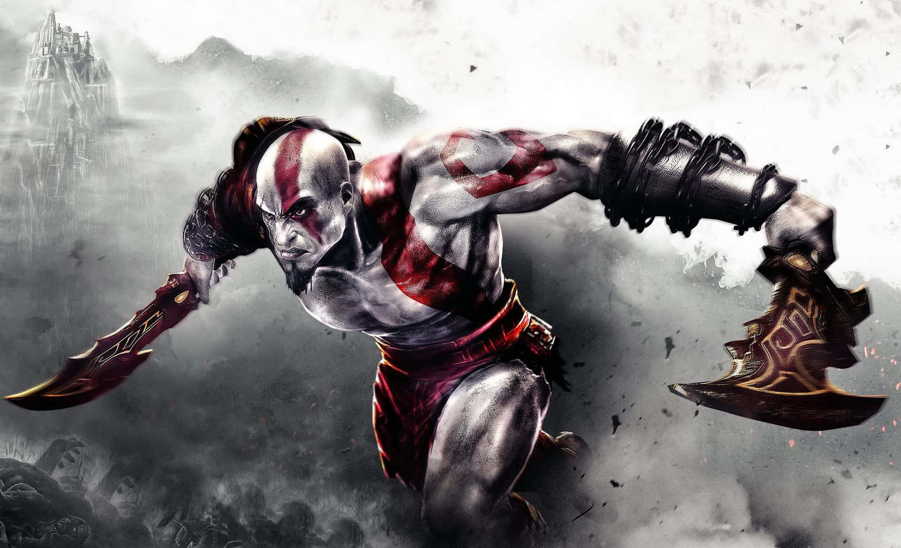
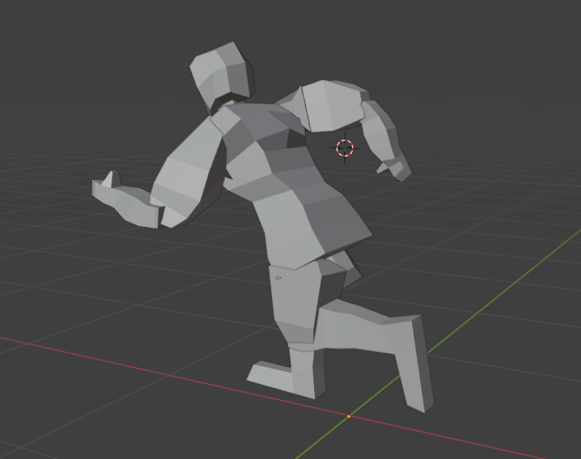
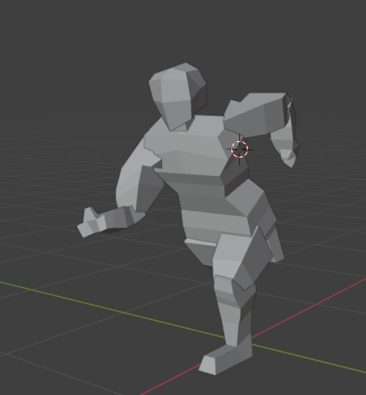
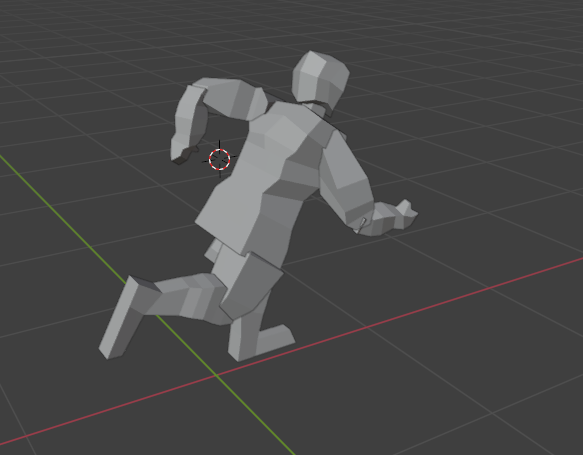

- Low Poly Character
Development
Development - Turnaround Images

For my front view, I chose to add lots of visible muscle pumps. This was implemented as I wanted my character to look intimidating and strong.

On the side view, I decided to make it slim but show some muscle bulk at the same time.
Testing
Personally, I find the frontview a bit odd in terms of the proportions on the legs and arms.
The sideview shows that the proportions are ok EXCEPT for the head, showing a very sharp jawline.
Feedback

Feedback on Legs
Legs and also the feet are drawn alright but the thickness from the front view is weird but the side view is alright. - Steffen
Gets too thin around the knee area. - Henry

Feedback on Torso
The Torso is good and the proportions are fine. - Steffen
Feedback on Arms
The arms have good form and can clearly see the muscle groups. You can also see the fingers clearly. The arms are uneven and dont match with each other since the muscles are non symmetrical. - Henry

Feedback on Head
The head looks really nice overall but Sideview for the hair is hard to see on the head and his jawline is too straight and isnt curving at the end from the side view. - Henry
Implications

I wanted to work on the feedback but I also want to add other stuff on the turnaround to add depth in my character. To add depth, I added layers of clothing and battle armor to make my character more stronger and even more intimidating. This makes my character look like a warrior at best.

Based from feedback, the feedback mostly say to fix limb proportions so it doesn't look weird and whatnot. So what I did mostly was definetely fixing the legs and arms so they are even from the frontview. The sideview looked alright based from what feedback.
Development - Modelling
For Modelling, I focused more on the Torso. The reason is that it is the more important part of the model, with it being more noticeable than the other parts of the model. The Torso will also define the strength and power of the character. By doing this, I can achieve my goal of requiring a very muscular model.

For the torso, I wanted to make it look strong, so by making the points of the chest more extruded and exaggerated, I can help exaggerate its muscular aura and vibe that it should give out. Then, I make the proportions slimmer to tell that my character is fit and strong!
Testing
 Personally, I find that the proportions are alright from the front, with the sides not too big but also not too slim. The extruded
chest doesn't seem too bad, but I believe I should make it more muscular instead of sharp.
From the side, not sure what I can really do, so I will request for feedback.
Feedback
Question: Based on the proportions of the chest, what do you think the model will look like?
Oisin: I think the character will look muscular based on the proportions!
Henry: The figure and how outwards the chest kinda makes it look like a women less than a man.
Question: What can I do to improve on making it look more stronger and muscular?
Oisin: You should make the stomache more defined to make him look stronger and muscular.
Henry: You could make the more hourglass figure by making the chest more defined!
Implications
From the front, I removed the chest that makes it look like a woman, but I kept the strength by adding a little bump off of it to make sure my model shows off its muscles on its chest. I also increased the stomach proportions a bit more as it looked like a very skinny but fit girl.

You see more of the chest here, still a bit of an extruded chest but looks more muscular now! The proportions of the stomach can be seen more clearly as well.
Development - Animating
I decided that I want my animations to look smooth and fit my models style. What I went with is a running animation that makes my model look smooth and swift whilst running at incredible speeds. The arms should be opposite of the leg next to it when running so it looks natural.
Testing
From the final product, I like it a lot, but I will ask for some feedback from my friends to see what I can improve!
Feedback
Question: Based on the animation, what kind of vibe does it give off?
Oisin: He looks like how it feels when you need to run in a dream but you're really slow..
Henry: He looks like he is using his his arms as momentum to carry him forwards!

Question: What can I improve to make the running animation look like he is fast?
Oisin: Decrease the space between keyframes.
Henry: Increase distance between frames near the end so it looks like he is running similar speed!
Implications
Not much showing from the images, but I have made it so that the keyframes are more closer together so it looks like my model is running fast and swift! I also fixed the footing as it seemed to be clipping through the floor.

Task 4

Task 5
I did this task look but now im on the right
I did this task look but now im on the right and theres 2 of me